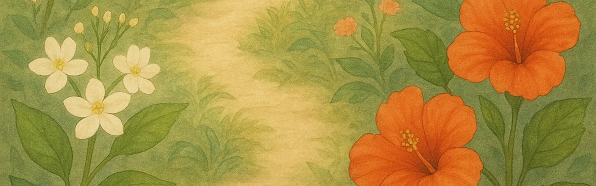
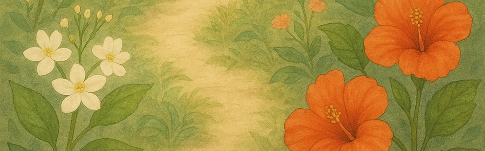

Bloom & Share
Step into a digital garden where every flower carries a whisper of care, a note of meaning, and a moment to be shared.
This Week's Favourite Flower: Tuberose
About This Garden
Bloom & Share is a digital platform that reimagines the age-old tradition of giving flowers, drawing inspiration from Sri Lanka's rich cultural tapestry. The core idea is profound yet straightforward: choose a flower, pair it with a personal message, and share it digitally to foster emotional connections, no matter the distance.
Choose Your Bloom
Loading beautiful flowers...
Flower Wisdom
What People Say
"The digital bouquets are stunning! Sent one to my amma overseas and she loved it."
"Beautiful collection and easy to use. Would love to see more local flowers like manel and araliya."
"The cultural meanings behind each flower helped me appreciate our traditions more. Istuti!"